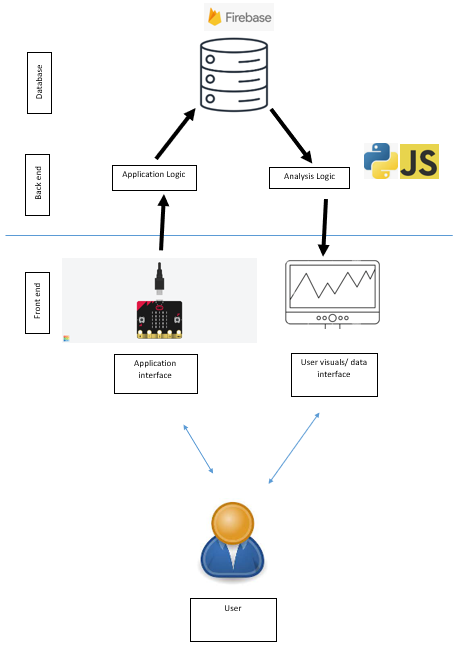
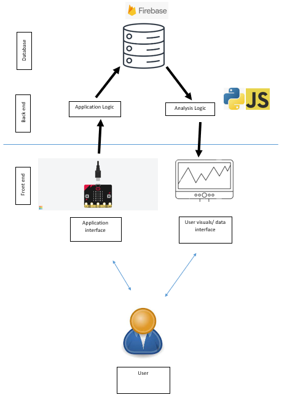

For my project, I will adapt an agile system to break down the project into smaller tasks and receive feedback on each task so that I can make changes if needed.
My system for the project will use a timer that records the total amount of screentime, which depending on the amount of screentime that the user uses, will offer feedback to the user on goals for them to reduce screentime and improve wellbeing. The end result that I hope to achieve as a result of the system is that the mental wellbeing of the user will improve. I will measure this by requesting feedback from the user on what the state of their mental health is.
I wish to use the microbit to be a visual indicator of the time limit set for screentime, as well as using button A to decrease time limit to a minimum of 1 hour, button B to increase time limit to a maximum of 9 hours, button A and B together to start the countdown, and the logo to end the program early. The amount of time the user spent using the program will be sent to firebase and the data will be displayed to a graph, which will comment on the amount of time the user has spent on their screens, and if it is deemed healthy or not to mental wellbeing.
The system will request that the user enter a limit for the amount of screentime they wish to limit themselves to. It will then display a timer counting down until it reaches zero or until the user decides to end the countdown early. It will then play a noise to indicate that the user should get off their electronic devices and take a break. The user can then leave a review of their mental wellbeing after using the program, and a response will be provided based on what they rated. The program will also provide the user with recommendations on activities to improve their wellbeing, based on their age, screentime, and free time.
 
